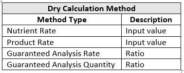

Agronomist End-to-End Scenarios
Overview
- Planned to Sales Agreement - sales tool within CE used to price product and transition growers into contracts.
- Fertilizer Calculator - utility that allows a salesperson to determine and calculate fertilizer requirements such as what product best fits the need of the customer and how much of that product is needed to fulfill the order (some work order is still needed and is anticipated to be ready in Fall 2020).
- Sales Order Process - integration of all Levridge pieces, specifically split billing, and its close integration with sales orders in F&O.
Process #1: Planned to Sales Agreement
There are three separate methods of kicking off a planned sales agreement with CE: 1. Batch plans 2. Regular plans 3. Proposals
Batch Plans
- Bath Plans tab
- Generate new
- Populate required fields
- Name: this field will auto populate when you click save
- Proposal Type: there are three proposal types: Customer, Field, Prospect. The batch plan will autopopulate to the Customer Type.
- Customer Operation
- Split Group
- Sales Period: Needed to accurately price
- Save
- Programs tab
- Farmable acreage field is required
- Preconfigured set of products in many cases on agronomist recommends the same products at the same time so instead of calculating these rates each time, you can set up a program, so it automatically calculates product and rate.
- Add products utilizing hte tabs across the top of the batch plan (seed, fertilizer, chemical, etc.)
- After adding your products, you can either:
- Generate a proposal
- Generate a sales agreement
Proposal Types
There are three different proposal types within a batch plan: Customer, Prospect, and Field. 1. Customer: Simplest proposal type and is the most used proposal type for a batch plan 2. Prospect: Individual the salesperson is pursuing that is not a current client and would like to generate a price for product and contract. - Generate contract - Sales period - Farmable Acreage approximation - Navigate to the seed, fertilizer, or chemical tab(s) to add product - Create proposal - Open proposal - Proposal lines tab - Run report - Print proposal - Give to potential client 3. Field: Least common proposal type used - Only benefit of the field is if we go through and make individual plans - You can add products once to all applicable fields
Creating a Regular Plan
- Plan to sales agreement
- Plans
- Generate new plan record
- Populate applicable fields
- Account
- Customer Operation
- Customer Site: Physical piece of land that you are putting product on
- Split group
- Description: Multiple plans for a field may be created so a detailed description is important
- Desired Crop
- Growing Season: The year the product will be applied to the field
- Utilize the tabs (Programs and Reccomendations, seed, fertilizer, or chemical) to add applicable product(s)
- Programs and Recommendations:
- Programs: Ability to add existing or new programs
- Recommendations: Attachment to precision mapping tools
- Seed (unit):
- Seed calculator: Helps to easily populate the quantity field
- Add product line(s) for all required seed
- Fertilizer:
- Timing: When to apply product
- Product
- Rate
- Unit/Rate
- This calculation not only helps get the product pricing but also helps to know when the grower needs specific products applied.
- Chemical:
- Timing: When to apply product
- Product
- Rate
- Unit/Rate
- This calculation not only helps get the product pricing but also helps to know when the grower needs specific products applied.
- Plan is complete and proposal can be generated
New Proposal
- Plan to sales agreement
- Proposals
- Generate new proposal
- Populate applicable fields
- Description
- Amount
- Customer Operation
- Split Group
- Growing Season
- Sales Period
- Manager: the client will have a workflow that sets who the Manager is so it is auto-generated. This is a customization.
- Associated plans
- Add existing plans
- Select all associated plans created for this specific grower
- Add
- Create lines
- This function goes through each plan taking all product information and the split groups behind them and generates individual product lines for them and creates pricing.
- Item category terms
- Allow syou to set different payment methods by product.
- Select item category (product)
- select payment method
- Save
- Proposal lines
- Discounts/incentives to support with proposal price
- Launch line you would like to discount
- Charge codes
- Add new proposal line change
- Select charge code: Charge codes are user defined data that are defined in F&O/AX and are integrated over to CE
- Value: dollar amount to be deducated off total product price
- Save
- Refresh
- Proposal line will be updated to reflect new unit price after charge code has been applied.
- Unit price: You can manually override this field to decrease price as well.
- Calculate prices
Add product lines from proposal lines tab
In some instances, a customer will decide to add products after you have generated the proposal. Using the add new proposal line within the proposal lines tab will allow you to add last minute products to the proposal and recalculate price. 1. (+) New proposal line 2. Select product 3. Quantity 4. save 5. Calculate prices 6. Line will be added to the proposal lines toab and price will be updated for that product from data from F&O/AX.
Submit for Approval
Once your proposal is priced and complete, it is ready to be submitted for approval. The submit for approval function/button ensures that margin on products are maintained throughout the sales process. 1. Submit for approval - Looks for any charge code or line item changes that were made and compares them to the defined thresholds that have been set. - If any changes rise above threshold set it will stop the process, lock down proposal, and send to the Manager that the proposal needs approval before moving forward to contract/agreement - Seed: - Patented traits owned by specific manufacturer that you must have a license from before you can purchase and use product - The system will look and see if grower has avalid agreement to buy this product and if there is configuration fin F&O/AX to either warn or stop theprocess. - With seed, you will typically use the "warn" function instead of full stopping the process. - Restricted used pesticides: - Based on federal and state laws, before restricted products can be picked up, we must ensure the applicator has a valid license to apply the product. This license number needs to be physically listed on the invoice. This will warn the process this item needs to be reviewed. - At this point in the process, it is important to check back in unti lthe license number has been documented. 2. Generate sales agreement - The sales agreement will be sent to F&O/AX once generated. - The process is then complete within CE. - The final step in the sales process would be to pull up the third-party integration (ex: Hello Sign) to capture a digital signature.
Process #2 Fertilizer Calculator
The Fertilizer Calculator is a tool used to generate blends of fertility products. 1. Planning Tools 2. Fertilizer Calculator 3. Generate New 4. Populate applicable fields - Customer - Customer Operation - Batch size: Blender capacity when generated relays how many batches will need to occur to fill order. - Fertilizer State - Dry - Liquid

- Save
- Blend lines will populate with nutrient and product
- Input either input value (lbs.) or ratio (percentage)
- Click Calculate to populate output
- Quantity needed
- Total blend amount
- Number of batches needed
- Blend percent
- Generate sales order and release report to blender facilities to begin blending product (this function is not currently available but will be once it is fully developed and tested.)
Process #3 Sales Order Process
The sales order is comprised of two pieces: the sales order and the work order. Both are tightly integrated within FinOps. The purpose of the sales order is to give users that only have access to CE the ability to enter orders for delivery and perform some of the functions that are usually completed in FinOps/AX.
Generating New Sales Order in CE
- Sales order tab
- Generate new
- Populate applicable sales order fields
- Account
- Customer Operation: It will default to one if the customer only has one operation.
- Split group: The individual paying for the product
- Delivery address: A requirement for many of the actions in F&O
- Inventory site: Where the inventory is arriving from
- Branch: Who is responsible for the customer or in charge of handling the billing
- Sales period: Used to price products against
- Ship date: Will default if not manually if not populated. Not a requirement.
- Save
Enter Sales Order Lines
- Add product
- Pick quantity
- Save After saving the estimated price, which is pulled from CE, will be populated. This may not be the price that is actually paid but is a stored list price that adjustments can be made to.
- Submit for Approval
- Checks for any products that need an applicator license
- Checks for any seed tech licenses that may be required
- Credit check (based off the credit settings with F&O. It will either warn or deny a generating sales order.)
- Generate Sales Order
- Once your submission has been approved, you will need to generate a sales order in F&O.
- You will receive a pop-up notifying you the sales order was created successfully in F&O/AX.
- Once order is acted upon in F&O, you can go into details within CE and will provide more information on the split group allocations so the person in CE has access to details.
Work Order
The work order is a type of sales order where the Ag Retailer will be performing a service. A work order requires more detail than a basic sales order. 1. Orders 2. Work Orders 3. Generate new 4. Populate applicable fields - Account - Customer Operation - Customer Site - Auto Print: Printer logic exists to automatically print a report remotely. Would be needed when a hard copy is necessary for the remote location to send with the driver. - Sales site: Party who is responsible for the sale of the product. - Application Site: Paraty performing task - Application Operation: Type of work beign done (synced with AgSync). - Application Date: Anticipated application date of the product - Application Window: For chemical product this is important because depending on stage of the crop, it could cause harm if applied outside a specific timeframe. - Crop: Crop the product will be applied to - Order Status: - Planned: Occurring in the future - Booked: Occurring in the future - Released: Moved to queue to get done and application date is set - Scheduled: Has been assigned to an applicator for a scheduled date - In-Progress: Product was administered partially and due to an unforeseen event, the job was not completed and requires further attention. - Completed Pending Review: Applicatoin is complete. - Archived - Rejected - Work Order ID: Generated number out of AgSync - Dispensing Order Number: Only comes into effect if there is a blender/Kahler integration. This number is created when the picking list/mixed ticket is dispatched out to the warehouse. - Ordering Notes: - Notes that are specific to the field - Notes that are specific to the application - Application Notes: Notes or observations the equipment operator made while in the field. - Save
Enter Work Order Lines
- Work Order Lines tab
- Add new line
- Populate applicable fields
- Sales Sites
- Customer
- Product
- Pests: Certain states require documentation that states the application and purpose of the sprayed chemical.
- Application Site
- Quantity
- Submit for Approval
- If this is an integrated order from AgSync or a third-party dispatch, the submit for approval function would not be present. The "Submit for Proposal" would show up if generated in CE.
- If you open a work order line, you will be able to view the Work Order Completion tab which provides more information on the application and applicator.
- Application Worker
- Application License
- Rolling Rock: Equipment that was used to perform application
- Weather data: Required by law to be tracked
- Wind speed
- Wind Direction
- Temperature
- Humidity
- Completion date
- State/End Times